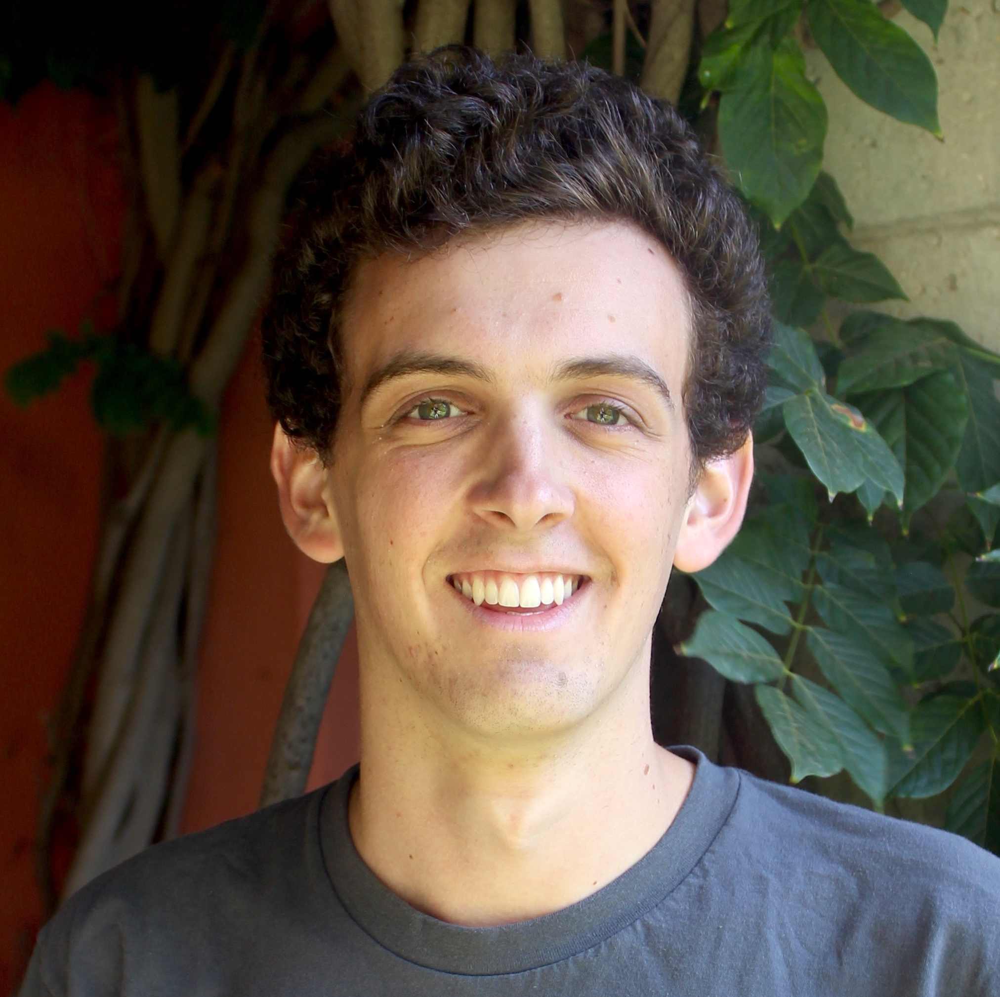

I'm a senior at Stanford majoring in mathematics, starting to look into graduate school for PhD programs in statistics and/or applied math. This is my website, where I'll post updates about my most recent work (mathematical or otherwise).Mathematically, my interests are broadly categorized by topology, functional analysis, signal processing, probability theory, and combinatorics.
Outside of math, I'm interested in improv, theatre, music theory, learning foreign languages, and education.
Use the sidebar to navigate through some of my pages.
Reach me at:
aqjaffe@berkeley.edu
(but first, change the name of my Bay Area institution)
Resume/CV available upon request